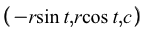
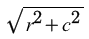
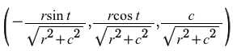
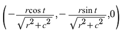
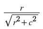
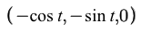
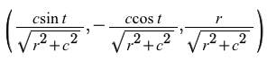
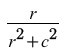
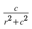
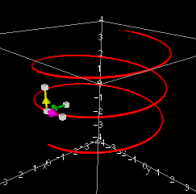

The helix is parametrized by:

The tangent vector is:
The norm of the tangent vector is:
The unit tangent vector is:
The normal vector is:
The norm of the normal vector is:
The unit normal vector is:
The binormal vector is:
The curvature of the helix is given by:
and the torsion of the helix is given by:
The (unit) tangent, normal and binormal vectors of the helix form an orthonormal basis and can be used as a set of axes (like any other space curve). This will be discussed in detail in later projects.
Visualization of vectors on the helix:
